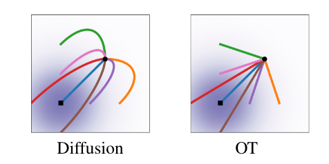

Flow Matching
连续归一化流
基于流的生成模型启发自物理中的流体力学。想象 \(\mathbb R^d\) 空间中有一系列粒子，在 \(t=0\) 时服从分布 \(p_0\)，随时间流逝粒子在空间中流动，直至 \(t=1\) 时形成分布 \(p_1\). 于是这样的流动过程形成了从分布 \(p_0\) 到分布 \(p_1\) 的一个转换。如果我们能够为上述流体运动过程建立起模型，并控制 \(p_0\) 为某简单易采样分布而 \(p_1\) 服从数据分布，那么不就得到一个生成模型了吗？这样的生成模型称作连续归一化流 (Continuous Normalizing Flows, CNFs)[2].
概率密度路径
粒子在流动的过程中，其概率分布在不断地改变。定义概率密度路径 \(p:[0,1]\times \mathbb R^d\to\mathbb R_{>0}\)，其中 \(p_t(\mathbf x)\) 表示 \(t\) 时刻 \(\mathbf x\) 位置处的概率密度。
显然，对任意时刻 \(t\in[0,1]\)，概率密度 \(p_t(\mathbf x)\) 都应满足归一化条件：\(\int p_t(\mathbf x)\mathrm d\mathbf x=1\). 因此，区别于流体力学中一般的流（不要求密度是归一化的），我们称这种模型为归一化流；又由于时间是连续的，因此称为连续归一化流。
速度场与连续性方程
速度场定义为 \(\mathbf v:[0,1]\times\mathbb R^d\to\mathbb R^d\)，其中 \(\mathbf v_t(\mathbf x)\) 表示 \(t\) 时刻 \(\mathbf x\) 位置处粒子的运动速度。流体中的粒子沿着速度场 \(\mathbf v\) 运动，引起概率密度的变化，因此 \(\mathbf v_t(\mathbf x)\) 与 \(p_t(\mathbf x)\) 之间一定存在某种关系，这个关系式称为连续性方程： \[ \frac{\partial}{\partial t}p_t(\mathbf x)+\nabla\cdot(p_t(\mathbf x)\mathbf v_t(\mathbf x))=0 \] 直观上，连续性方程的第一项表示单位时间内 \(\mathbf x\) 位置处粒子的增加/减少量，第二项表示单位时间内 \(\mathbf x\) 位置处粒子的流出/流入量（见可汗学院关于散度的讲解），显然粒子增加量就是流入量，因此连续性方程成立。熟悉随机微分方程的读者可能会发现，连续性方程其实就是 Fokker-Planck 方程在扩散项为零时的情形。
值得注意的是，概率密度路径与速度场不是一一对应的关系，不同的速度场可以产生相同的概率密度路径。例如，给 \(\mathbf v_t(\mathbf x)\) 加上散度为零的场（无源场），就得到了一个新的速度场，并且连续性方程依旧成立，所以概率密度路径不变。
流与变量替换
粒子沿着速度场运动，得到的轨迹称为流。具体而言，流 \(\boldsymbol\phi:[0,1]\times\mathbb R^d\to\mathbb R^d\) 由下述微分方程定义： \[ \begin{align} \frac{\partial}{\partial t}\boldsymbol\phi_t(\mathbf x)&=\mathbf v_t(\boldsymbol\phi_t(\mathbf x))\\ \boldsymbol\phi_0(\mathbf x)&=\mathbf x \end{align} \] 其中 \(\boldsymbol\phi_t(\mathbf x)\) 表示 \(0\) 时刻位于 \(\mathbf x\) 处的粒子在 \(t\) 时刻运动到的位置。换句话说，随着 \(t\) 从 0 到 1 变化，\(\boldsymbol\phi_t(\mathbf x)\) 形成了从 \(\mathbf x\) 位置出发的粒子运动的轨迹。为了看得更清楚，可以对上式左右两边同时从 \(0\) 到 \(t\) 积分： \[ \boldsymbol\phi_t(\mathbf x)-\mathbf x=\int_0^t\mathbf v_s(\boldsymbol\phi_s(\mathbf x))\mathrm ds \] 左边表示从 \(\mathbf x\) 出发的粒子在 \(t\) 时间内的位移，右边是对速度的积分，自然也是位移。
根据流 \(\boldsymbol\phi\) 的定义，\(t\) 时刻位于 \(\mathbf x\) 位置处的粒子在 \(0\) 时刻的出发位置是 \(\boldsymbol\phi_t^{-1}(\mathbf x)\)，因此根据变量替换公式，可以知道 \(p_t(\mathbf x)\) 与 \(\boldsymbol\phi_t(\mathbf x)\) 之间有关系： \[ p_t(\mathbf x)=p_0(\boldsymbol\phi_t^{-1}(\mathbf x))\left|\det\left[\frac{\partial\boldsymbol\phi_t^{-1}}{\partial\mathbf x}(\mathbf x)\right]\right| \]
拓展（瞬时变量替换公式）：基于连续性方程，我们可以推导出瞬时变量替换公式： \[\frac{\mathrm d}{\mathrm dt}\log p_t(\boldsymbol\phi_t(\mathbf x))+\nabla\cdot\mathbf v_t(\boldsymbol\phi_t(\mathbf x))=0\] 推导过程：计算 \(p_t(\boldsymbol\phi_t(\mathbf x))\) 对 \(t\) 的全导数： \[\begin{align}\frac{\mathrm d}{\mathrm dt}p_t(\boldsymbol\phi_t(\mathbf x))&=\left.\frac{\partial}{\partial t}p_t(\mathbf y)\right|_{\mathbf y=\boldsymbol\phi_t(\mathbf x)}+\left\langle\left.\nabla p_t(\mathbf y)\right|_{\mathbf y=\boldsymbol\phi_t(\mathbf x)},\frac{\partial \boldsymbol\phi_t(\mathbf x)}{\partial t}\right\rangle\\&=-\left.\nabla\cdot(p_t(\mathbf y)\mathbf v_t(\mathbf y))\right|_{\mathbf y=\boldsymbol\phi_t(\mathbf x)}+\left\langle\nabla p_t(\boldsymbol\phi_t(\mathbf x)),\frac{\partial \boldsymbol\phi_t(\mathbf x)}{\partial t}\right\rangle\\&=-\big[p_t(\mathbf y)(\nabla\cdot\mathbf v_t(\mathbf y))+\langle\nabla p_t(\mathbf y),\mathbf v_t(\mathbf y)\rangle\big]\Big|_{\mathbf y=\boldsymbol\phi_t(\mathbf x)}+\left\langle\nabla p_t(\boldsymbol\phi_t(\mathbf x)),\frac{\partial \boldsymbol\phi_t(\mathbf x)}{\partial t}\right\rangle\\\\&=-p_t(\boldsymbol\phi_t(\mathbf x))(\nabla\cdot\mathbf v_t(\boldsymbol\phi_t(\mathbf x)))-\left\langle\nabla p_t(\boldsymbol\phi_t(\mathbf x)),\mathbf v_t(\boldsymbol\phi_t(\mathbf x))\right\rangle+\left\langle\nabla p_t(\boldsymbol\phi_t(\mathbf x)),\frac{\partial \boldsymbol\phi_t(\mathbf x)}{\partial t}\right\rangle\\&=-p_t(\boldsymbol\phi_t(\mathbf x))(\nabla\cdot\mathbf v_t(\boldsymbol\phi_t(\mathbf x)))\end{align}\] 其中第二行是代入了连续性方程，第三行是将散度展开，最后一行是根据流的定义有 \(\mathbf v_t(\boldsymbol\phi_t(\mathbf x))=\frac{\partial}{\partial t}\boldsymbol\phi_t(\mathbf x)\). 于是我们有： \[\frac{\mathrm d}{\mathrm d t}\log p_t(\boldsymbol\phi_t(\mathbf x))=\frac{1}{p_t(\boldsymbol\phi_t(\mathbf x))}\frac{\mathrm d}{\mathrm dt}p_t(\boldsymbol\phi_t(\mathbf x))=-\nabla\cdot\mathbf v_t(\boldsymbol\phi_t(\mathbf x))\] 这就得到了瞬时变量替换公式。
现在，为了构建生成模型，我们只需要构建速度场 \(\mathbf v_t(\mathbf x)\)，使得对应的概率密度路径 \(p_t(\mathbf x)\) 满足 \(p_0\) 为某简单分布且 \(p_1\) 为数据分布，这就是 flow matching 要完成的事。
Flow Matching
原始损失函数
设 \(p_t(\mathbf x)\) 是一概率密度路径，满足 \(p_0\) 为某简单分布（例如标准正态分布）且 \(p_1\) 为数据分布，\(\mathbf u_t(\mathbf x)\) 为对应的速度场（未知）。Flow matching[1] 使用神经网络构建速度场 \(\mathbf v_{t}^{\theta}(\mathbf x)\) 去近似 \(\mathbf u_t(\mathbf x)\)，损失函数为： \[ \mathcal L_\text{FM}(\theta)=\mathbb E_{t,p_t(\mathbf x)}\left[\Vert\mathbf v_{t}^{\theta}(\mathbf x)-\mathbf u_t(\mathbf x)\Vert^2\right] \] 然而式中真实速度场 \(\mathbf u_t(\mathbf x)\) 是未知的，自然无法使用 \(\mathcal L_\text{FM}\) 训练，怎么办呢？聪明的读者可能已经发现了，flow matching 的训练目标和遇到的问题与 score matching 一模一样，其中速度场直接对标 score function，所以把 score matching 的解决方法搬过来即可。借鉴 denoising score matching，我们每次针对单个样本去近似条件速度场，其中样本从数据集中采样，这样均摊下来就是在近似无条件的真实速度场了。
条件速度场
具体而言，给定某特定样本 \(\mathbf x_1\)，称 \(p_t(\mathbf x\vert\mathbf x_1)\) 为条件概率路径。那么，边缘概率路径可以通过条件概率路径对所有样本求期望得到： \[ p_t(\mathbf x)=\int p_t(\mathbf x\vert\mathbf x_1)q(\mathbf x_1)\mathrm d\mathbf x_1=\mathbb E_{q(\mathbf x_1)}[p_t(\mathbf x\vert\mathbf x_1)] \] 设上述条件概率路径 \(p_t(\mathbf x\vert\mathbf x_1)\) 可以由条件速度场 \(\mathbf u_t(\mathbf x\vert\mathbf x_1)\) 得到（即二者满足连续性方程），那么可以推得，速度场 \(\mathbf u_t(\mathbf x)\) 与条件速度场 \(\mathbf u_t(\mathbf x\vert\mathbf x_1)\) 有如下关系： \[ \mathbf u_t(\mathbf x)=\int \mathbf u_t(\mathbf x\vert\mathbf x_1)\frac{p_t(\mathbf x\vert\mathbf x_1)q(\mathbf x_1)}{p_t(\mathbf x)}\mathrm d\mathbf x_1=\mathbb E_{p(\mathbf x_1\vert\mathbf x)}[\mathbf u_t(\mathbf x\vert\mathbf x_1)] \]
证明：我们只需要证明基于上面的方式定义的 \(\mathbf u_t(\mathbf x)\) 与 \(p_t(\mathbf x)\) 满足连续性方程即可。直接代入： \[\begin{align}\frac{\partial p_t(\mathbf x)}{\partial t}&=\int\left(\frac{\partial}{\partial t}p_t(\mathbf x\vert\mathbf x_1)\right)q(\mathbf x_1)\mathrm d\mathbf x_1\\&=-\int\nabla\cdot (p_t(\mathbf x\vert\mathbf x_1)\mathbf u_t(\mathbf x\vert\mathbf x_1))q(\mathbf x_1)\mathrm d\mathbf x_1\\&=-\nabla\cdot\left(\int p_t(\mathbf x\vert\mathbf x_1)\mathbf u_t(\mathbf x\vert\mathbf x_1)q(\mathbf x_1) \mathrm d\mathbf x_1\right)\\&=-\nabla\cdot (p_t(\mathbf x)\mathbf u_t(\mathbf x))\end{align}\] 证毕。
熟悉 score function 的读者应该知道，对 score function 也有类似的关系式： \[\nabla\log p_t(\mathbf x)=\mathbb E_{p(\mathbf x_1\vert\mathbf x)}[\nabla\log p_t(\mathbf x\vert\mathbf x_1)]\]
CFM 损失函数
基于条件概率路径和条件速度场，原始的 flow matching 损失函数可以改写做如下 conditional flow matching 损失函数： \[ \mathcal L_\text{CFM}(\theta)=\mathbb E_{t,q(\mathbf x_1),p_t(\mathbf x\vert\mathbf x_1)}\left[\Vert\mathbf v_{t}^{\theta}(\mathbf x)-\mathbf u_t(\mathbf x\vert\mathbf x_1)\Vert^2\right] \] 可以证明 \(\mathcal L_\text{FM}\) 与 \(\mathcal L_\text{CFM}\) 只差与 \(\theta\) 无关的常数，因此对优化问题而言是等价的。推导思路其实与 score matching 到 denoising score matching 如出一辙（感兴趣的读者可以参考这篇文章）。
证明：将 \(\mathcal L_\text{FM}\) 中的平方打开： \[\mathcal L_\text{FM}(\theta)=\mathbb E_{t,p_t(\mathbf x)}\left[\Vert\mathbf v_{t}^{\theta}(\mathbf x)\Vert^2\right]+\mathbb E_{t,p_t(\mathbf x)}\left[\Vert\mathbf u_t(\mathbf x)\Vert^2\right]-2\mathbb E_{t,p_t(\mathbf x)}\left[\left\langle\mathbf v_t^\theta(\mathbf x),\mathbf u_t(\mathbf x)\right\rangle\right]\] 第一项保留，第二项与 \(\theta\) 无关扔掉，第三项做如下变形： \[\begin{align}\mathbb E_{p_t(\mathbf x)}\left[\left\langle\mathbf v_t^\theta(\mathbf x),\mathbf u_t(\mathbf x)\right\rangle\right]&=\int p_t(\mathbf x)\left\langle\mathbf v_t^\theta(\mathbf x),\int \mathbf u_t(\mathbf x\vert\mathbf x_1)\frac{p_t(\mathbf x\vert\mathbf x_1)q(\mathbf x_1)}{p_t(\mathbf x)}\mathrm d\mathbf x_1\right\rangle\mathrm d\mathbf x\\&=\int\left\langle\mathbf v_t^\theta(\mathbf x),\int \mathbf u_t(\mathbf x\vert\mathbf x_1)p_t(\mathbf x\vert\mathbf x_1)q(\mathbf x_1)\mathrm d\mathbf x_1\right\rangle\mathrm d\mathbf x\\&=\iint\left\langle\mathbf v_t^\theta(\mathbf x),\mathbf u_t(\mathbf x\vert\mathbf x_1)\right\rangle p_t(\mathbf x\vert\mathbf x_1)q(\mathbf x_1)\mathrm d\mathbf x_1\mathrm d\mathbf x\\&=\mathbb E_{q(\mathbf x_1),p_t(\mathbf x\vert\mathbf x_1)}\left[\left\langle\mathbf v_t^\theta(\mathbf x),\mathbf u_t(\mathbf x\vert\mathbf x_1)\right\rangle\right]\end{align}\] 加上第一项得： \[\mathcal L'_\text{CFM}(\theta)=\mathbb E_{t,q(\mathbf x_1),p_t(\mathbf x\vert\mathbf x_1)}\left[\Vert\mathbf v_{t}^{\theta}(\mathbf x)\Vert^2-2\left\langle\mathbf v_t^\theta(\mathbf x),\mathbf u_t(\mathbf x\vert\mathbf x_1)\right\rangle\right]\] 看起来不太好看，配个方就得到了 CFM 损失函数： \[\mathcal L_\text{CFM}(\theta)=\mathbb E_{t,q(\mathbf x_1),p_t(\mathbf x\vert\mathbf x_1)}\left[\Vert\mathbf v_{t}^{\theta}(\mathbf x)-\mathbf u_t(\mathbf x\vert\mathbf x_1)\Vert^2\right]\]
现在，只要我们设计一个可解的条件速度场 \(\mathbf u_t(\mathbf x\vert\mathbf x_1)\)，就可以基于 \(\mathcal L_\text{CFM}\) 训练了。
条件速度场的设计
一般形式
我们从条件概率路径 \(p_t(\mathbf x\vert\mathbf x_1)\) 入手，考虑高斯分布形式： \[ p_t(\mathbf x\vert\mathbf x_1)=\mathcal N\left(\mathbf x;\boldsymbol\mu_t(\mathbf x_1),\sigma_t^2(\mathbf x_1)\mathbf I\right) \] 其中 \(\boldsymbol\mu:[0,1]\times \mathbb R^d\to\mathbb R^d\) 为与时间步有关的均值，\(\sigma:[0,1]\times\mathbb R^d\to\mathbb R_{>0}\) 为与时间步有关的标准差。特别地，我们规定：
- 当 \(t=0\) 时，设 \(p_0(\mathbf x\vert\mathbf x_1)=p(\mathbf x)=\mathcal N(\mathbf x;\mathbf0,\mathbf I)\)，即与 \(\mathbf x_1\) 无关的标准高斯分布；
- 当 \(t=1\) 时，设 \(p_1(\mathbf x\vert\mathbf x_1)=\mathcal N\left(\mathbf x;\mathbf x_1,\sigma_\min^2\mathbf I\right)\)，其中标准差 \(\sigma_\min\) 充分小，即大约是在 \(\mathbf x_1\) 处的确定性分布。
直接找到对应上述条件概率路径的条件速度场是比较困难的，但是我们可以找到对应的以 \(\mathbf x_1\) 为条件的流 \(\boldsymbol\psi\)： \[ \boldsymbol\psi_t(\mathbf x)=\sigma_t(\mathbf x_1)\mathbf x+\boldsymbol\mu_t(\mathbf x_1) \]
可以验证上述形式的条件流 \(\boldsymbol\psi_t\) 与条件概率路径 \(p_t(\mathbf x\vert\mathbf x_1)\) 的确满足变量替换公式： \[ \begin{align} p_0(\boldsymbol\psi_t^{-1}(\mathbf x)\vert\mathbf x_1)\left|\det\left[\frac{\partial\boldsymbol\psi_t^{-1}}{\partial\mathbf x}(\mathbf x)\right]\right|&= p(\boldsymbol\psi_t^{-1}(\mathbf x))\left|\det\left[\frac{\partial\boldsymbol\psi_t^{-1}}{\partial\mathbf x}(\mathbf x)\right]\right|\\ &=\mathcal N\left(\frac{\mathbf x-\boldsymbol\mu_t(\mathbf x_1)}{\sigma_t(\mathbf x_1)};\mathbf0,\mathbf I\right)\left|\frac{1}{\sigma_t^d(\mathbf x_1)}\right|\\ &=\mathcal N\left(\mathbf x;\boldsymbol\mu_t(\mathbf x_1),\sigma_t^2(\mathbf x_1)\mathbf I\right)\\ &=p_t(\mathbf x\vert\mathbf x_1) \end{align} \] 换句话说，只要取 \(\mathbf x_0\sim p(\mathbf x)=\mathcal N(\mathbf x;\mathbf0,\mathbf I)\)，那么就有 \(\mathbf x=\boldsymbol\psi_t(\mathbf x_0)\sim p_t(\mathbf x\vert\mathbf x_1)\).
有了条件流，就可以找到对应的条件速度场 \(\mathbf u_t(\mathbf x\vert\mathbf x_1)\) 了。根据流的定义有： \[ \frac{\partial}{\partial t}\boldsymbol\psi_t(\mathbf x)=\mathbf u_t(\boldsymbol\psi_t(\mathbf x)\vert\mathbf x_1) \]
代入 \(\mathcal L_\text{CFM}\) 得： \[ \begin{align} \mathcal L_\text{CFM}(\theta)&=\mathbb E_{t,q(\mathbf x_1),p(\mathbf x_0)}\left[\Vert\mathbf v_{t}^{\theta}(\boldsymbol\psi_t(\mathbf x_0))-\mathbf u_t(\boldsymbol\psi_t(\mathbf x_0)\vert\mathbf x_1)\Vert^2\right]\\ &=\mathbb E_{t,q(\mathbf x_1),p(\mathbf x_0)}\left[\left\Vert\mathbf v_{t}^{\theta}(\boldsymbol\psi_t(\mathbf x_0))-\frac{\partial}{\partial t}\boldsymbol\psi_t(\mathbf x_0)\right\Vert^2\right]\\ &=\mathbb E_{t,q(\mathbf x_1),p(\mathbf x_0)}\left[\left\Vert\mathbf v_{t}^{\theta}(\boldsymbol\psi_t(\mathbf x_0))-\sigma_t'(\mathbf x_1)\mathbf x_0-\boldsymbol\mu_t'(\mathbf x_1)\right\Vert^2\right]\\ \end{align} \] 其中 \(\boldsymbol\mu_t'(\mathbf x_1),\,\sigma_t'(\mathbf x_1)\) 的求导表示对时间 \(t\) 求导。这就是 flow matching 最终用于训练的损失函数形式。
如果只是为了训练，我们没有必要把条件速度场显式地解出来，但是这是可以做到的： \[ \begin{align} \mathbf u_t(\mathbf x\vert\mathbf x_1)&=\left.\frac{\partial}{\partial t}\boldsymbol\psi_t(\mathbf y)\right|_{\mathbf y=\boldsymbol\psi_t^{-1}(\mathbf x)}\\ &=\sigma_t'(\mathbf x_1)\boldsymbol\psi_t^{-1}(\mathbf x)+\boldsymbol\mu_t'(\mathbf x_1)\\ &=\frac{\sigma_t'(\mathbf x_1)}{\sigma_t(\mathbf x)}(\mathbf x-\boldsymbol\mu_t(\mathbf x_1))+\boldsymbol\mu_t'(\mathbf x_1) \end{align} \]
当 \(\mu_t(\mathbf x)\) 与 \(\sigma_t(\mathbf x)\) 取特殊形式时，我们可以还原出经典的扩散模型，还可以得到比扩散路径更优的最优传输路径。
特殊情形：经典扩散
考虑 VE diffusion： \[ p_t(\mathbf x\vert\mathbf x_1)=\mathcal N\left(\mathbf x;\mathbf x_1,\sigma_{1-t}^2\mathbf I\right) \] 这对应着 \(\boldsymbol\mu_t(\mathbf x_1)=\mathbf x_1,\,\sigma_t(\mathbf x_1)=\sigma_{1-t}\) 的情形。代入条件速度场得： \[ \mathbf u_t(\mathbf x\vert\mathbf x_1)=-\frac{\sigma_{1-t}'}{\sigma_{1-t}}(\mathbf x-\mathbf x_1) \] 相应的条件流为： \[ \boldsymbol\psi_t(\mathbf x)=\sigma_{1-t}\mathbf x+\mathbf x_1 \] 考虑 VP diffusion： \[ p_t(\mathbf x\vert\mathbf x_1)=\mathcal N\left(\mathbf x;\alpha_{1-t}\mathbf x_1,(1-\alpha_{1-t}^2)\mathbf I\right) \] 这对应着 \(\boldsymbol\mu_t(\mathbf x_1)=\alpha_{1-t}\mathbf x_1,\,\sigma_t(\mathbf x_1)=\sqrt{1-\alpha_{1-t}^2}\) 的情形。代入条件速度场得： \[ \mathbf u_t(\mathbf x\vert\mathbf x_1)=-\frac{\alpha'_{1-t}}{1-\alpha^2_{1-t}}(\alpha_{1-t}\mathbf x-\mathbf x_1) \] 相应的条件流为： \[ \boldsymbol\psi_t(\mathbf x)=\sqrt{1-\alpha_{1-t}^2}\mathbf x+\alpha_{1-t}\mathbf x_1 \] 可以看见，VE diffusion 或 VP diffusion 的条件流对时间 \(t\) 不是线性关系，也就是说它们的轨迹会拐弯。
特殊情形：最优传输
相比经典的扩散路径，一个更合适的路径是将 \(\boldsymbol\mu_t(\mathbf x),\,\sigma_t(\mathbf x)\) 都设置为 \(t\) 的线性变换： \[ \boldsymbol\mu_t(\mathbf x_1)=t\mathbf x_1,\quad \sigma_t(\mathbf x)=1-(1-\sigma_\min)t \] 这样得到的条件速度场为： \[ \mathbf u(\mathbf x\vert\mathbf x_1)=\frac{\mathbf x_1-(1-\sigma_\min)\mathbf x}{1-(1-\sigma_\min)t} \] 相应的条件流为： \[ \boldsymbol\psi_t(\mathbf x)=(1-(1-\sigma_\min)t)\mathbf x+t\mathbf x_1 \] 该条件流事实上是两个高斯分布 \(p_0(\mathbf x\vert\mathbf x_1)\) 和 \(p_1(\mathbf x\vert\mathbf x_1)\) 之间的最优传输 displacement map. 直观上，沿最优传输路径运动的粒子会在直线上均匀运动，而非像扩散路径一样拐弯，如下图所示：

总结
Flow matching 看起来蛮复杂，但是仔细想想，其实就是给已有的扩散模型框架套了个流体力学的壳，用新的体系重新说了一遍。比如条件速度场其实就是条件 score function 的线性变换，而 flow matching 的核心数学技巧也都是借用自 denoising score matching. 文章的亮点在于提出了基于最优传输的新的扩散路径，比传统的 VP 和 VE 路径更适合采样。
参考资料
- Lipman, Yaron, Ricky TQ Chen, Heli Ben-Hamu, Maximilian Nickel, and Matt Le. Flow matching for generative modeling. arXiv preprint arXiv:2210.02747 (2022). ↩︎
- Chen, Ricky TQ, Yulia Rubanova, Jesse Bettencourt, and David K. Duvenaud. Neural ordinary differential equations. Advances in neural information processing systems 31 (2018). ↩︎
- Tor Fjelde, Emile Mathieu, Vincent Dutordoir. AN INTRODUCTION TO FLOW MATCHING. https://mlg.eng.cam.ac.uk/blog/2024/01/20/flow-matching.html ↩︎